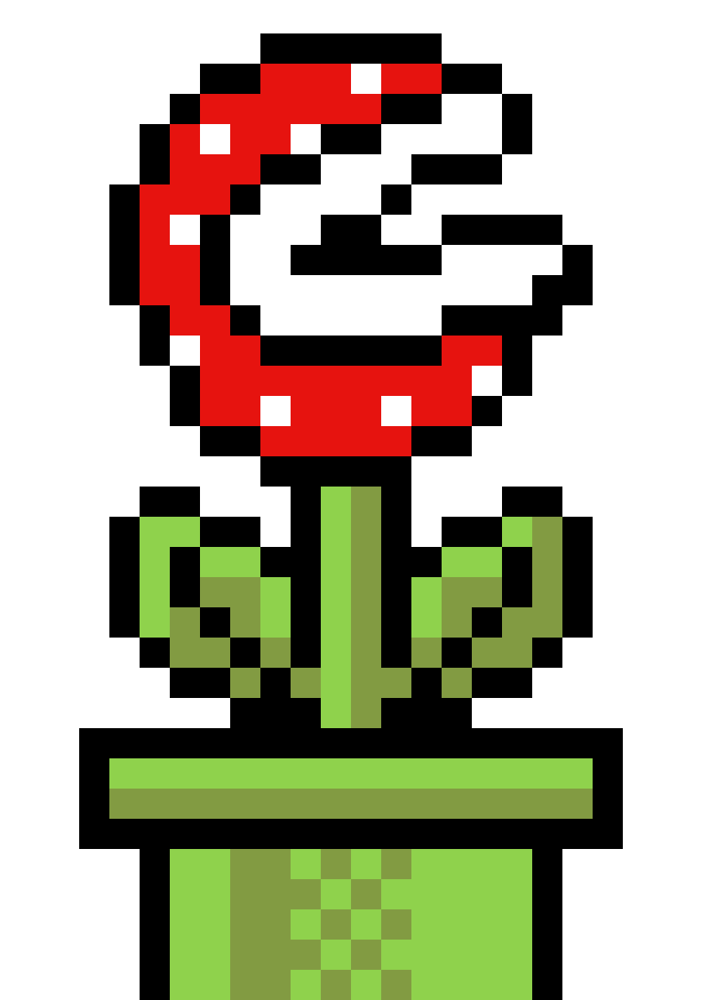

Egyszerű esetben lehet úgy is programot írni, hogy egy-két mondatos feladat megfogalmazás után azonnal a számítógép elé ülünk, majd a feladatnak megfelelően begépeljük a szükséges utasításokat. Jobb esetben elindítjuk a programot, és ha hibát találunk, javítunk, majd valamilyen formában tároljuk.
Ez mindaddig megy is, amíg egyszerűbb feladatról van szó, és csak saját magunknak dolgozunk, de ha bonyolult, összetett feladatról van szó, akkor egy idő után megakadunk. Ha a program végre futni is fog és abban esetleg valamilyen változtatásra van szükség, akkor viszont vége, nincs tovább, újra kell írni. Ebben a részben olyan ismereteket fogunk tanulni, amelyek segítenek az ilyen buktatók kikerülésén és hatékonyan segítik a számítógépes munkánkat.
A helyes programkészítés lépései:
A programozási nyelv a számítástechnikában használt olyan, az ember által olvasható és értelmezhető utasítások sorozata, amivel közvetlenül, vagy közvetve (például: gépi kódra fordítás után) közölhetjük a számítógéppel egy adott feladat elvégzésének módját.
A programozási nyelvek csoportosítása felhasználói közelség szerint:
Ha érdeklődsz a téma iránt, kutakodj kicsit az interneten!
|
 | kép | |
| legismertebb magyar ételek | The Beatles | Vénusz légycsapója | 5 |